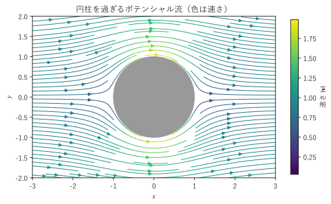
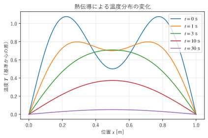

第 17 章 物理への応用
ここまでに学んだ勾配・発散・回転と積分定理は、物理の基本法則を書き表すための言葉である。この章では、電磁気学、流体力学、熱伝導の 3 つの分野で、法則がベクトル解析でどのように表され、どのように扱われるかを見る。最後に、3 つの分野に共通する構造をまとめる。
電磁気学
マクスウェル方程式
電場 \(\bm{E}\) と磁束密度 \(\bm{B}\) のふるまいは、4 つの式からなるマクスウェル方程式で決まる。ここでは真空中（物質の分極や磁化を考えない場合）の形を示す。電荷密度を \(\rho\)、電流密度を \(\bm{J}\)、真空の誘電率を \(\varepsilon_0\)、真空の透磁率を \(\mu_0\) とする。
これらは微分形と呼ばれる形で、空間の各点で成り立つ関係を表す。一方、電磁気学の法則は歴史的には、閉曲面を貫く流束や閉曲線に沿った循環の関係（積分形）として見いだされた。両者は、第 14 章のガウスの発散定理と第 15 章のストークスの定理で互いに書き換えられる。表 19 に対応をまとめる。積分形の \(V\) は閉曲面 \(\partial V\) で囲まれた立体、\(Q\) は \(V\) の中の電荷、\(S\) は閉曲線 \(\partial S\) を境界とする曲面、\(I\) は \(S\) を貫く電流である。
法則 |
積分形 |
微分形 |
書き換えに使う定理 |
|---|---|---|---|
ガウスの法則 |
\(\displaystyle \iint_{\partial V} \bm{E} \cdot d\bm{S} = \frac{Q}{\varepsilon_0}\) |
\(\nabla \cdot \bm{E} = \rho / \varepsilon_0\) |
ガウスの発散定理 |
磁束の保存 |
\(\displaystyle \iint_{\partial V} \bm{B} \cdot d\bm{S} = 0\) |
\(\nabla \cdot \bm{B} = 0\) |
ガウスの発散定理 |
ファラデーの電磁誘導の法則 |
\(\displaystyle \oint_{\partial S} \bm{E} \cdot d\bm{r} = -\frac{d}{dt} \iint_S \bm{B} \cdot d\bm{S}\) |
\(\nabla \times \bm{E} = -\partial \bm{B} / \partial t\) |
ストークスの定理 |
アンペール・マクスウェルの法則 |
\(\displaystyle \oint_{\partial S} \bm{B} \cdot d\bm{r} = \mu_0 I + \mu_0 \varepsilon_0 \frac{d}{dt} \iint_S \bm{E} \cdot d\bm{S}\) |
\(\nabla \times \bm{B} = \mu_0 \bm{J} + \mu_0 \varepsilon_0 \partial \bm{E} / \partial t\) |
ストークスの定理 |
ガウスの法則は第 14 章で、アンペールの法則とファラデーの法則は第 15 章で、積分形から微分形に書き換えた。磁束の保存（\(\nabla \cdot \bm{B} = 0\)）も、ガウスの法則と同じくガウスの発散定理で書き換えられる。
電荷の保存と変位電流
アンペール・マクスウェルの法則の右辺の第 2 項 \(\mu_0 \varepsilon_0 \partial \bm{E} / \partial t\) は変位電流の項と呼ばれ、マクスウェルが付け加えた。この項が必要な理由は、第 8 章の公式 \(\nabla \cdot (\nabla \times \bm{B}) = 0\) から分かる。アンペール・マクスウェルの法則の両辺の発散をとると、左辺は 0 になるので
となる。最後の変形にはガウスの法則 \(\varepsilon_0 \nabla \cdot \bm{E} = \rho\) を使った。こうして得られる \(\nabla \cdot \bm{J} + \partial \rho / \partial t = 0\) は電荷の保存を表す連続の式であり、第 14 章で示した電荷の保存則に一致する。変位電流の項がなければ \(\nabla \cdot \bm{J} = 0\) となり、コンデンサーの充電のように電荷がたまっていく現象と矛盾する。
電位とベクトルポテンシャル
\(\nabla \cdot \bm{B} = 0\) なので、第 16 章で見たように \(\bm{B} = \nabla \times \bm{A}\) となるベクトルポテンシャル \(\bm{A}\) が存在する。これをファラデーの法則に代入すると \(\nabla \times (\bm{E} + \partial \bm{A} / \partial t) = \bm{0}\) となるので、括弧の中は回転が 0 の場であり、スカラーポテンシャルの勾配で書ける。物理の慣習に従って負号を付けると
となる。\(V\) は電位である。時間変化のない静電場では \(\bm{E} = -\nabla V\) であり、ガウスの法則に代入すると、第 16 章のポアソン方程式
が得られる。電荷のない領域ではラプラス方程式 \(\nabla^2 V = 0\) になる。
電磁波
電荷も電流もない真空（\(\rho = 0\)、\(\bm{J} = \bm{0}\)）では、マクスウェル方程式から電場だけの式を導ける。ファラデーの法則の両辺の回転をとり、第 8 章の公式 \(\nabla \times (\nabla \times \bm{E}) = \nabla (\nabla \cdot \bm{E}) - \nabla^2 \bm{E}\) を使う。\(\nabla \cdot \bm{E} = 0\) なので左辺は \(-\nabla^2 \bm{E}\) である。右辺は、時間と空間の微分の順序を入れ替えてアンペール・マクスウェルの法則を使うと
となる。両辺を比べると
が得られる。これは、速さ \(c = 1 / \sqrt{\mu_0 \varepsilon_0}\) で伝わる波を表す波動方程式である。\(\varepsilon_0\) と \(\mu_0\) の値を代入すると \(c \approx 3.00 \times 10^8 \ \mathrm{m/s}\) となり、光の速さに一致する。マクスウェルはこの一致から、光が電磁波であると考えた。\(\bm{B}\) についても同じ形の式が成り立つ。
(24) の解の例として、\(z\) 軸の正の向きに進む平面波
がある。\(k\) は波数、\(\omega\) は角周波数である。電場と磁場は互いに直交し、どちらも進行方向に直交している。この波がマクスウェル方程式の 4 つの式をすべて満たすことを、SymPy で確かめる。
28def report() -> None:
29 """z 方向に進む平面波を代入し、マクスウェル方程式の各式の「左辺 - 右辺」を表示する."""
30 c = 1 / sp.sqrt(eps0 * mu0) # 光速
31 omega = c * k # 角周波数（分散関係 omega = c k）
32 phase = k * z - omega * t
33 e_field = sp.Matrix([E0 * sp.sin(phase), 0, 0])
34 b_field = sp.Matrix([0, E0 / c * sp.sin(phase), 0])
35
36 print("div E =", sp.simplify(div(e_field)))
37 print("div B =", sp.simplify(div(b_field)))
38 print("rot E + dB/dt =", sp.simplify(curl(e_field) + sp.diff(b_field, t)).T)
39 print("rot B - mu0 eps0 dE/dt =", sp.simplify(curl(b_field) - mu0 * eps0 * sp.diff(e_field, t)).T)
40
41 # 電場の x 成分が波動方程式を満たすことも確かめる
42 ex = e_field[0]
43 wave = sp.diff(ex, x, 2) + sp.diff(ex, y, 2) + sp.diff(ex, z, 2) - mu0 * eps0 * sp.diff(ex, t, 2)
44 print("波動方程式の左辺 =", sp.simplify(wave))
div E = 0
div B = 0
rot E + dB/dt = Matrix([[0, 0, 0]])
rot B - mu0 eps0 dE/dt = Matrix([[0, 0, 0]])
波動方程式の左辺 = 0
どの式も「左辺 - 右辺」が 0 になり、平面波がマクスウェル方程式の解であることが分かる。発散と回転を求める関数 div() と curl() は、定義どおりに偏微分を組み合わせたものである。
サンプルの全体：ch17_em_wave.py
流体力学
流体の運動は、各点での流れの速度 \(\bm{v}(\bm{r}, t)\) というベクトル場で表す。この節では \(\rho\) は流体の密度を表す（電磁気学の節の電荷密度とは別のものである）。
連続の式と非圧縮性
質量の保存は、第 14 章で導いた連続の式 \(\partial \rho / \partial t + \nabla \cdot (\rho \bm{v}) = 0\) で表される。水のように密度がほとんど変わらない流体では、連続の式は非圧縮性の条件 \(\nabla \cdot \bm{v} = 0\) になり、流れの中のどの点にも湧き出しや吸い込みがない。
渦度
速度の場の回転 \(\bm{\omega} = \nabla \times \bm{v}\) が渦度である。第 7 章で見たように、角速度 \(\bm{\Omega}\) で回る剛体回転の渦度は \(2 \bm{\Omega}\) であり、渦度は流体の微小な部分がその場で回転する角速度の 2 倍を表す。渦度が至るところで 0 の流れを渦なしの流れという。
第 15 章で触れたケルビンの循環定理によれば、保存力だけを受ける完全流体（粘性のない流体）では、流体とともに動く閉曲線に沿った循環は時間がたっても変わらない。そのため、静止した状態や一様な流れから始まった完全流体の流れは、渦なしのまま保たれる。
ポテンシャル流
渦なしの流れは、領域が単連結であれば、第 16 章で見たようにスカラーポテンシャル \(\phi\) の勾配で書ける。
この \(\phi\) を速度ポテンシャルという（流体力学では負号を付けない）。さらに流れが非圧縮であれば \(\nabla \cdot \bm{v} = \nabla \cdot \nabla \phi = 0\) なので、速度ポテンシャルはラプラス方程式
を満たす。このように渦なしで非圧縮の流れをポテンシャル流という。ラプラス方程式は線形なので、2 つの解を足したものも解になる。この性質を使うと、単純な流れを重ね合わせて複雑な流れを作れる。
例として、半径 \(a\) の円柱を過ぎる 2 次元の流れを考える。遠くで \(x\) 軸の正の向きに速さ \(v_\infty\) で流れる一様流 \(\phi = v_\infty x\) に、原点に置いた二重湧き出し（湧き出しと吸い込みを近づけた極限）を重ねると、2 次元の極座標 \((r, \theta)\) で
となる。この \(\phi\) は \(r > 0\) でラプラス方程式を満たす。第 9 章の円柱座標の勾配の式で \(\rho\) を \(r\)、方位角 \(\phi\) を \(\theta\) に置き換えたもの（この \(\phi\) は速度ポテンシャルとは別）を使うと、速度の成分は
である。円柱の表面 \(r = a\) では \(v_r = 0\) となり、流れは円柱の表面を貫かずに沿って進む。また \(r \to \infty\) では \(\phi \to v_\infty x\) となり、遠くでは一様流に戻る。表面での速さ \(|v_\theta| = 2 v_\infty |\sin\theta|\) は、円柱の上下（\(\theta = \pm \pi / 2\)）で最大値 \(2 v_\infty\) をとる。図 24 は、この流れを直交座標の成分に直して流線で描いたものである。


図 24 円柱を過ぎるポテンシャル流
18def velocity(x: NDArray[np.float64],
19 y: NDArray[np.float64]) -> tuple[NDArray[np.float64], NDArray[np.float64]]:
20 """速度ポテンシャル phi = v_inf x (1 + A^2 / r^2) の勾配として、流れの速度 (v_x, v_y) を返す."""
21 r2 = x**2 + y**2
22 vx = V_INF * (1.0 - A**2 * (x**2 - y**2) / r2**2)
23 vy = -2.0 * V_INF * A**2 * x * y / r2**2
24 return vx, vy
サンプルの全体：ch17_potential_flow.py
この流れは上下だけでなく前後（左右）にも対称なので、円柱の前面と背面の圧力がつり合い、円柱は流れから力を受けない。これは実際の流れとは異なる（ダランベールのパラドックス）。実際の流体には粘性があり、円柱の表面の近くの薄い層（境界層）で渦が生まれ、背後に渦の列ができる。ポテンシャル流は、境界層の外側の流れや翼のまわりの流れの近似として役立つ。
運動方程式の概要
流体の運動方程式についても、概要だけを示しておく。完全流体の運動方程式（オイラー方程式）は、圧力を \(p\)、単位質量あたりの外力を \(\bm{g}\) として
と書ける。左辺の括弧の中は、流体とともに動く微小な部分の加速度である。\((\bm{v} \cdot \nabla) \bm{v}\) は、各成分に演算子 \(v_x \partial / \partial x + v_y \partial / \partial y + v_z \partial / \partial z\) を作用させたもので、流れに乗って場所が変わることによる速度の変化を表す。右辺の \(-\nabla p\) は、圧力の高い側から低い側へ押す力である。粘性を考えると、非圧縮の流れでは右辺に \(\mu \nabla^2 \bm{v}\)（\(\mu\) は粘性係数で、透磁率 \(\mu_0\) とは別）が加わり、ナビエ・ストークス方程式になる。
第 8 章の公式から得られる恒等式 \((\bm{v} \cdot \nabla) \bm{v} = \nabla (|\bm{v}|^2 / 2) - \bm{v} \times (\nabla \times \bm{v})\) を使うと、オイラー方程式からベルヌーイの定理を導ける。時間変化のない、渦なしの、非圧縮の流れで、外力がない場合は、渦度が 0 なので
となり、\(p + \rho |\bm{v}|^2 / 2\) は流れの中のどこでも等しい。速く流れる場所ほど圧力が低い。
熱伝導
フーリエの法則
物体の中の温度を \(T(\bm{r}, t)\) とする。熱は温度の高いところから低いところへ流れる。単位時間に単位面積を通る熱の量を表すベクトル場を熱流束 \(\bm{q}\) とすると、多くの物質でフーリエの法則
が成り立つ。\(\lambda\) は熱伝導率である（\(k\) と書く本も多い）。第 5 章で見たように、勾配は温度が最も急に上がる向きを指すので、負号を付けた \(-\nabla T\) は温度が最も急に下がる向きであり、熱はその向きに流れる。
熱伝導方程式の導出
物体の中に、動かない任意の領域 \(V\) をとる。この節では \(\rho\) は物体の密度、\(c\) は比熱（単位質量の温度を 1 K 上げるのに必要な熱量）、\(Q\) は単位体積・単位時間あたりの発熱量とする（電磁気学の節の電荷密度 \(\rho\)、光の速さ \(c\)、電荷 \(Q\) とは別である）。\(V\) の中の熱エネルギーの増え方は、表面 \(\partial V\) から流れ込む熱と、内部での発熱の和に等しい。
右辺の第 1 項は、外向きの流束に負号を付けたものなので、流れ込む熱を表す。この項をガウスの発散定理で体積積分に直すと、すべての項が \(V\) での体積積分になる。
これがどのような \(V\) でも成り立つので、被積分関数が各点で 0 になる。フーリエの法則を代入し、\(\lambda\) が場所によらない定数であれば \(\nabla \cdot (-\lambda \nabla T) = -\lambda \nabla^2 T\) なので
が得られる。これを熱伝導方程式という。\(\alpha\) は温度拡散率と呼ばれる。「積分形の保存則をガウスの発散定理で微分形に直す」という手順は、第 14 章で連続の式を導いたときと同じである。
ラプラシアンの意味
第 8 章で見たように、\(\nabla^2 T\) は、ある点の温度がまわりの平均よりどれだけ低いかに比例する。(25) は、発熱がなければ、まわりより冷たい点は温まり、まわりより熱い点は冷めることを表している。こうして温度の山や谷はならされていく。
1 次元の棒（長さ \(L\)、両端の温度を 0 に保つ）では、(25) は \(\partial T / \partial t = \alpha \, \partial^2 T / \partial x^2\) となり、
がその解になる。実際に代入すると、両辺とも \(-\alpha (n\pi / L)^2 T\) に等しい。方程式は線形なので、これらの和も解である。図 25 は、\(n = 1\) と \(n = 3\) の 2 つの解を重ねた温度分布が、時間とともに変わる様子を描いたものである。\(n = 3\) の成分は \(n = 1\) の成分の 9 倍の速さで減衰するので、細かい凸凹が先に消え、なだらかな山だけが残る。


図 25 熱伝導による温度分布の変化
17def temperature(x: NDArray[np.float64], t: float) -> NDArray[np.float64]:
18 """両端を 0 に保った棒の温度. 2 つの正弦波（モード）の重ね合わせ.
19
20 sin(n pi x / L) exp(-alpha (n pi / L)^2 t) は、どの n でも熱伝導方程式を満たす。
21 """
22 result = np.zeros_like(x)
23 for n, amplitude in ((1, 1.0), (3, 0.5)):
24 kn = n * np.pi / LENGTH
25 result += amplitude * np.sin(kn * x) * np.exp(-ALPHA * kn**2 * t)
26 return result
サンプルの全体：ch17_heat_decay.py
定常状態
十分に時間がたち、温度が変わらなくなった状態を定常状態という。(25) で \(\partial T / \partial t = 0\) とおくと、発熱がない場合はラプラス方程式 \(\nabla^2 T = 0\)、発熱がある場合はポアソン方程式 \(\nabla^2 T = -Q / \lambda\) になる。境界の温度を与えて定常状態の温度分布を数値的に求める方法は、第 18 章で扱う。
3 つの分野に共通する構造
ここまでの 3 つの分野には、共通する構造がある。
閉曲面を通る流束と、内部にある量（電荷、質量、熱エネルギー）やその増減との関係を表す（積分形）。
ガウスの発散定理で、各点で成り立つ式（微分形）に直す。
流束をポテンシャルの勾配で表す関係（\(\bm{E} = -\nabla V\)、\(\bm{v} = \nabla \phi\)、\(\bm{q} = -\lambda \nabla T\)）と組み合わせると、ポアソン方程式やラプラス方程式が得られる。
図 26 積分形の法則からポアソン方程式・ラプラス方程式が得られる流れ
表 20 に、各分野の量の対応をまとめる。式の形が同じなので、ある分野で得た解や解法を、別の分野の問題にそのまま使える。たとえば、一様な熱の流れの中に熱を通さない円柱を置いたときの定常な温度分布は、円柱を過ぎるポテンシャル流の速度ポテンシャルと同じ形の関数で表される。どちらもラプラス方程式を満たし、円柱の表面で法線方向の流束が 0 という同じ境界条件を持つからである。
分野 |
ポテンシャル |
流束（ベクトル場） |
定常状態の方程式 |
|---|---|---|---|
静電場 |
電位 \(V\) |
電場 \(\bm{E} = -\nabla V\) |
\(\nabla^2 V = -\rho / \varepsilon_0\) |
ポテンシャル流 |
速度ポテンシャル \(\phi\) |
速度 \(\bm{v} = \nabla \phi\) |
\(\nabla^2 \phi = 0\) |
熱伝導 |
温度 \(T\) |
熱流束 \(\bm{q} = -\lambda \nabla T\) |
\(\nabla^2 T = -Q / \lambda\) |
重力 |
単位質量あたりの位置エネルギー（重力ポテンシャル）\(U\) |
重力加速度 \(\bm{g} = -\nabla U\) |
\(\nabla^2 U = 4 \pi G \rho\) |
この章のまとめ
マクスウェル方程式の積分形と微分形は、ガウスの発散定理とストークスの定理で互いに書き換えられる。
\(\nabla \cdot (\nabla \times \bm{B}) = 0\) から電荷の保存が、\(\nabla \times (\nabla \times \bm{E})\) の公式から電磁波の波動方程式が導かれる。
流体の渦度は速度の回転である。渦なしで非圧縮の流れ（ポテンシャル流）の速度ポテンシャルはラプラス方程式を満たす。
熱伝導方程式は、エネルギーの収支にガウスの発散定理とフーリエの法則を組み合わせて導かれる。ラプラシアンは温度をならす働きを表す。
静電場、ポテンシャル流、熱伝導、重力は、いずれもポアソン方程式やラプラス方程式で表される共通の構造を持つ。